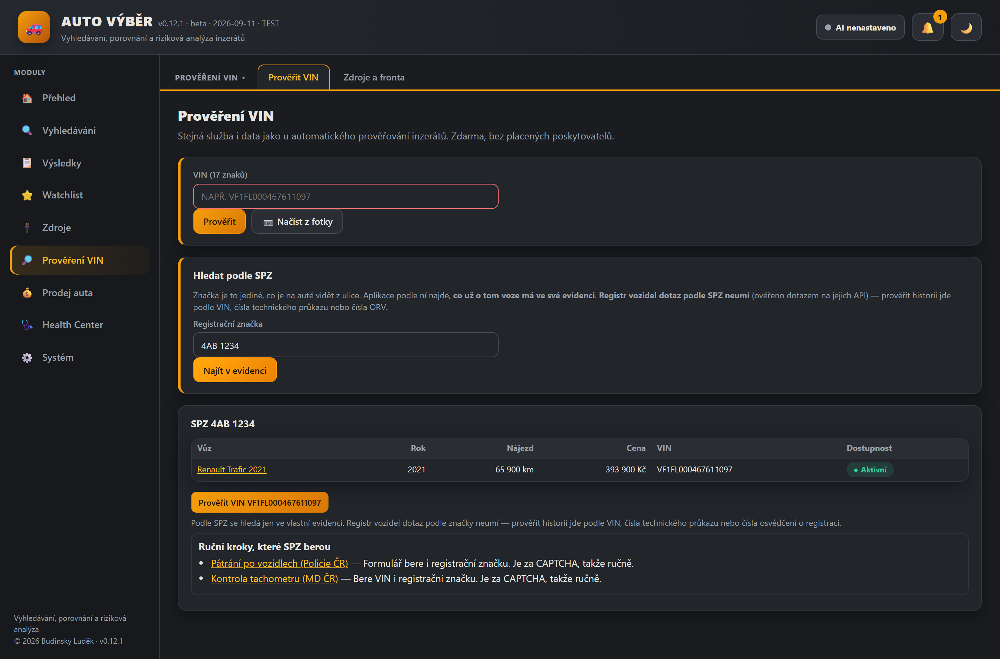
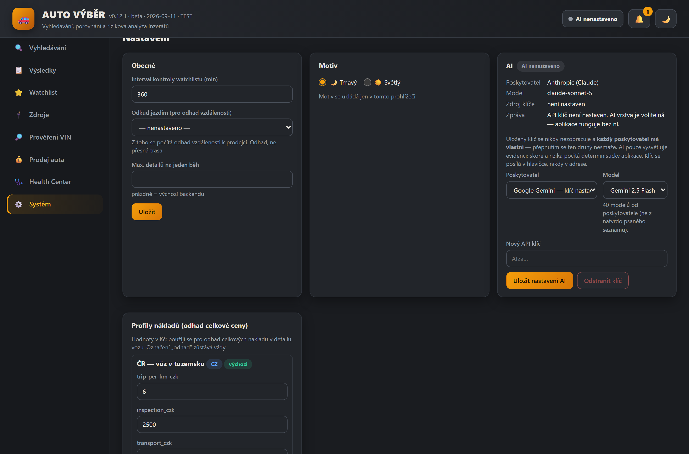
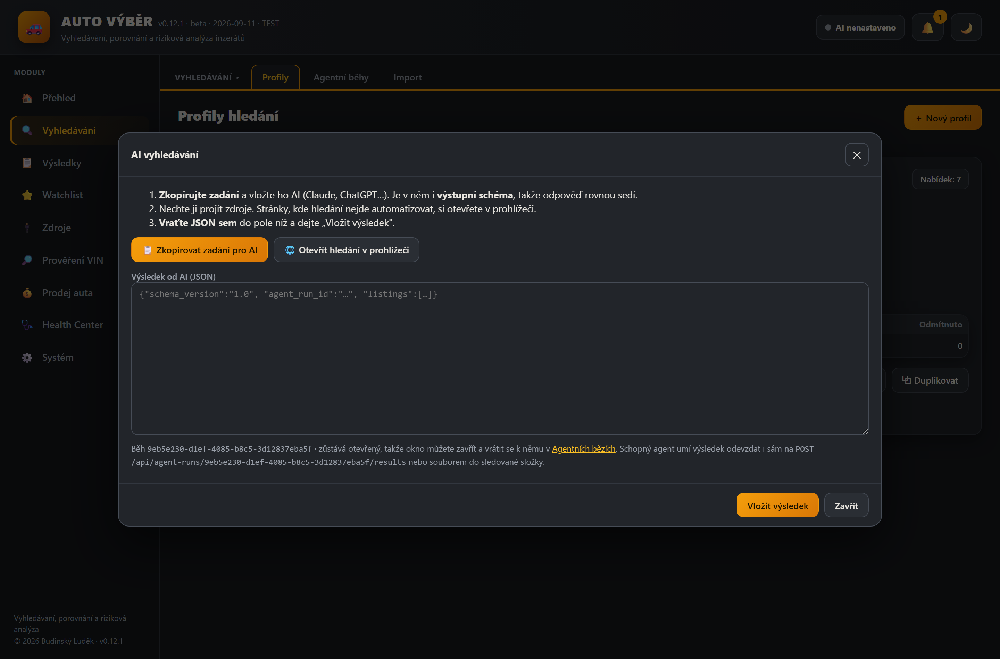

🚗AUTO VÝBĚR
Vlastní aplikace na hledání ojetého auta. Stáhne nabídky, sjednotí je, deterministicky je oboduje 0–100, najde rizika a rozpory — a u každého vozu se zveřejněným VIN sama spustí prověření historie, bez klikání. Běží jen u mě na počítači, nic neposílá ven a nepoužívá žádnou placenou databázi. Vlastní auto navíc umí ocenit a poctivě u toho napsat, z čeho cena vychází, a VIN načte z fotky. K vozu, na který se jedete podívat, sestaví otázky na prodejce. Podle VIN si načte údaje z registru vozidel a doplní jimi formulář. Po prohlídce si zapíšete, co jste u auta zjistili, a rozpory proti inzerátu spočítá sama. Data si sama zálohuje a každou zálohu ověří. Hledat jde i podle SPZ — a je poctivě napsáno, co podle značky nejde. 475 automatických testů.
Python 3.14 FastAPI SQLite vanilla JS SPA pywebview (desktop) PyInstaller + Inno Setup 475 testů
Co to dělá
Koupě ojetého auta stojí na dvou otázkách: je ta cena rozumná a co o tom autě nevím. Inzertní servery odpovídají jen na první, a to ještě špatně — každý má jiné údaje, tentýž vůz je na třech serverech s různým nájezdem a chybějící údaj vypadá stejně nevinně jako vyplněný. Tahle aplikace obojí sjednotí a hlavně poctivě odděluje doložené od nedoloženého.
- Z profilu hledání (značka, model, rok, nájezd, cena, výbava, lokalita) najde nabídky u zdrojů, které to povolují v robots.txt — u ostatních otevře hledání v prohlížeči nebo přijme import. Robots.txt se neobchází, CAPTCHA se neluští.
- Každou nabídku normalizuje (jednotky, palivo, převodovka, výbava), deduplikuje podle VIN a podobnosti a porovná s mediánem srovnatelných vozů včetně korekce na rozdílný nájezd.
- Spočítá skóre 0–100 v šesti oblastech, kde je u každého bodu vidět, odkud se vzal. Chybějící údaj skóre nikdy nezvýší — je to mezera, ne přednost.
- Najde rizika: podezřele nízká cena proti trhu, dovoz bez historie, požadavek zálohy před prohlídkou, rozpory mezi inzeráty i obecně známé slabiny modelu a motoru (27 záznamů, každý se zdrojem a datem).
- U vozu se zveřejněným VIN sám prověří historii a nálezy promítne do rizik, skóre i watchlistu.
Klíčové funkce
- Automatické prověření VIN. Kontrola se zakládá sama při každé cestě, jak se nabídka do aplikace dostane — živý konektor, výsledek AI agenta, vložená URL, import CSV/JSON i ruční doplnění VIN. Fronta je uložená v databázi, takže přežije restart; stejné VIN v pěti inzerátech znamená jednu kontrolu, ne pět.
- Poctivé stavy místo uklidňujících nul. Timeout, blokace ani chyba parseru se nikdy neuloží jako „bez záznamu“. A u „bez nálezu v prověřených zdrojích“ je rovnou napsáno, že to neznamená bezvadný vůz. Datum načtení stránky se nikdy nevydává za datum události.
- Zdroje podle skutečnosti, ne podle přání. Automaticky jede vlastní evidence inzerátů, NHTSA vPIC (u toho je poctivě napsáno, že dekóduje VIN, ale historii nedává) a Registr silničních vozidel Ministerstva dopravy — ten má veřejné dokumentované API a stačí do aplikace vložit vlastní klíč, který je zdarma. Kontrola tachometru, Pátrání Policie ČR a svolávací akce výrobců jsou za CAPTCHA nebo přihlášením, takže zůstávají ručním krokem s odkazem a návodem — ochrany se neobcházejí. Nic z toho není placené.
- Rozpory, které stojí za pozornost. Klesající stav tachometru mezi inzeráty, dva souběžné inzeráty téhož vozu s různým nájezdem, rok nebo značka z VIN neodpovídající inzerátu. U každého je napsáno, co všechno to ještě může být — samo o sobě to není důkaz stočení.
- Rolety místo psaní. Značka, model, generace, barva i výchozí místo se vybírají (39 značek, 303 modelů, 79 měst). Model se odvíjí od zvolené značky a všude je úniková volba „jiné (napsat ručně)“, takže číselník nikdy neblokuje neobvyklý vůz.
- Údaje z registru vozidel podle VIN. Registr silničních vozidel (MD ČR) má veřejné dokumentované API. Aplikace z něj sama načte datum první registrace, počet vlastníků a provozovatelů, platnost technické prohlídky, zadržené doklady a stav vozidla — a hlavně z toho udělá rozpory proti inzerátu. U vlastního auta stačí zadat VIN a formulář se vyplní sám. Přepisují se jen prázdná pole: co jste napsali vy, zůstane a rozdíl se ukáže jako rozdíl. Nic se nedomýšlí — nájezd, převodovku ani pohon registr nevede a je to v aplikaci napsané; rok je označený jako odvozený z první registrace, ne z výroby.
- AI vyhledávání na jeden zátah. Aplikace si AI nespouští sama — vyrobí zadání, které vložíte Claudovi nebo ChatGPT, a JSON s výsledkem se vrací do pole ve stejném okně. Zadání v sobě má i výstupní schéma, takže odpověď rovnou sedí a nemusí se opravovat. Po vložení appka výsledek zvaliduje a přepne rovnou na výsledky.
- Hledání podle SPZ. Značka je jediné, co je na autě vidět z ulice a co si člověk zapamatuje. Aplikace podle ní najde, co už o tom voze má ve své evidenci — nabídky i vlastní auta — a když u nich zná VIN, nabídne prověření historie. A hlavně nezamlčuje to podstatné: registr vozidel dotaz podle SPZ neumí. Ověřoval jsem to skutečným dotazem na jejich API: podle VIN vrátí data, podle značky vrátí prázdno. Kdyby to appka zamlčela, prázdný výsledek by vypadal jako „prověřeno, čisté“ — a to je nejhorší možná odpověď. Značka se ukládá tak, aby „1AB 2345“ a „1ab-2345“ byla táž značka, a při prohlídce se porovnává s tím, co je na voze; jiná značka je nález nejvyšší závažnosti, který mě pošle zkontrolovat VIN, protože ten se nemění.
- AI si vybírám já — a je pořád jen doplněk. Vedle Anthropicu umí aplikace i Google Gemini, včetně výběru konkrétního modelu. Každý poskytovatel má vlastní klíč, takže přepnutím o ten druhý nepřijdu. Seznam modelů se načítá od poskytovatele, ne z natvrdo napsaného seznamu — ten by za pár měsíců nabízel modely, které už neexistují. Bez klíče se nenabízí nic a nic se nedomýšlí. Klíč jde vždy v hlavičce požadavku, nikdy v adrese (ta se loguje). A pořád platí to hlavní: AI evidenci jen vysvětluje, skóre ani rizika nepočítá.
- Záloha, která se sama zkontroluje. Aplikace drží jedinou kopii dat, takže si je jednou denně zálohuje — ale jen když se od poslední zálohy změnila. A hlavně: každou zálohu hned ověří. Otevře ji jako samostatnou databázi, zkontroluje čitelnost a porovná počty záznamů s živými daty; když to neprojde, soubor smaže — rozbitá záloha je horší než žádná, protože se na ni člověk spolehne. Stav je vidět v Health Center a neúspěch se nikdy nepřejde mlčky. Není to záloha mimo počítač: leží na stejném disku, takže chrání proti poškozené databázi a smazaným datům, ne proti selhání disku — a aplikace to říká na rovinu.
- Zápis z prohlídky. Podklad je jedna půlka, tohle druhá: co jsem u auta skutečně zjistil. Údaj v inzerátu je tvrzení prodejce, údaj z registru je záznam úřadu — ale stav tachometru na palubovce jsem viděl já. Zapíše se, co jsem viděl, a rozpory proti inzerátu se spočítají samy: jiný VIN na voze (pak celé prověření historie běželo nad jiným autem), nižší nájezd než v inzerátu (kilometrů nemůže ubýt), vyšší cena na místě, chybějící servisní knížka. Všechno se propíše do rizik u vozu. Body k vyplnění jsou tytéž, co se tisknou v podkladu — a výchozí stav je „nezjištěno“, ne „v pořádku“. Aplikace z toho nepočítá slevu ani cenu: na to nemá podklad a byla by to vymyšlená čísla.
- Podklad k prohlídce. Aplikace u každého vozu poctivě zapíše, co chybí — a z těch mezer udělá otázky na prodejce a body ke kontrole u vozu. U každého je napsané proč: bod bez důvodu je jen další nicneříkající odrážka. Skládá se jen z toho, co už aplikace o autě ví i neví — chybějící údaje, nálezy rizik, ruční kroky prověření VIN, obecné slabiny modelu. Body se odškrtávají a dají se stáhnout k vytištění, protože na prohlídku se nechodí s notebookem. Není to prohlídka ani posudek a fyzickou kontrolu v servisu to nenahrazuje; obecná slabina modelu je vždy označená jako to, čím je — místo, kde se u daného modelu vyplatí dívat pozorněji, ne zjištěná závada konkrétního vozu.
- VIN z fotografie. Vyfotíte štítek nebo ražbu a aplikace nabídne, co přečetla — uložit to musíte sami po porovnání s fotkou. Rozpoznávání běží ve vašem počítači (OCR zabudované ve Windows), fotka se nikam neodesílá a nic se neplatí. Úlohu usnadňuje, že VIN má pevný tvar: nemá písmena I, O ani Q (norma je vynechala právě kvůli záměně s 1 a 0) a na deváté pozici bývá kontrolní číslice. Ta ale není důkaz — evropští výrobci ji často nepočítají, takže neshoda neznamená špatně přečtený VIN. Většina práce byla v tom, aby modul nevymýšlel VIN tam, kde žádný není: číslo účtu, řádek faktury i „STK 06/2027 KM 182350“ mají taky sedmnáct znaků a kontrolní číslici trefí náhodně zhruba každý jedenáctý pokus.
- Prodej auta: ocenění vlastního vozu. Vlastní auto se zaeviduje a aplikace mu z nabídek, které zná, spočítá doporučenou inzertní cenu, dosažitelné rozpětí a varianty rychlý / trpělivý prodej. U každé srovnávané nabídky je vidět, jestli se započítala, a když ne, tak proč — havarovaná, na díly, cena podmíněná financováním, cena bez DPH, duplicita nebo váš vlastní inzerát. Odhad výkupu se nevydává vůbec, protože výkupní ceny nemá aplikace odkud doložit, a podklad jsou nabídkové ceny, ne doložené prodejní — zmizelý inzerát neprokazuje prodej. Vyjednávací sleva i sleva za rychlý prodej jsou přiznané, nastavitelné předpoklady, ne výsledek měření. Návrh inzerátu vznikne jen z evidovaných údajů včetně známých vad a aplikace ho nikam neodešle.
- Watchlist a upozornění. Sledování ceny a dostupnosti, historie změn, lokální upozornění při novém riziku nebo poklesu ceny. Aplikace nikdy sama nekontaktuje prodejce, nic nerezervuje a neplatí zálohy.
- Odhad vzdálenosti bez cizí služby. Vzdálenost k prodejci se počítá z offline tabulky měst a PSČ; ověřeno proti deseti známým trasám s odchylkou do 12 %. Vždy je označená jako odhad, ne jako přesná trasa.
Náhledy





Náhledy jsou z ukázkových (demo) dat — reálné inzeráty ani poznámky ke konkrétním vozům na web nepatří.
Stav
Beta verze v0.12.1 (září 2026), 475 automatických testů plus vizuální kontrola 22 obrazovek a interaktivní průchod aplikací. Plně samostatná aplikace — běží jen u mě na PC ve vlastním okně (pywebview), data zůstávají v lokální SQLite, aktualizace si stahuje tiše z domácího NAS. Soukromá, bez veřejného hostingu a bez instalátoru ke stažení. Není to znalecký posudek ani prověření vozu — je to pomůcka, která setřídí nabídky a hlavně ukáže, co je doložené a co ne.
Co je ověřené jen částečně: načtení VIN z fotografie je vyzkoušené na jedné skutečné fotce ražby a na vykreslených štítcích. Jeden reálný snímek ale není statistika — jiné světlo, úhel nebo odlesk můžou dopadnout jinak. Živě fungují dva externí zdroje: dekódování VIN z NHTSA vPIC (ne servisní historie) a Registr silničních vozidel, který dává registrační a technické údaje — ne servisní historii a ne stav tachometru. Mapování odpovědi registru je ověřené na jednom skutečném voze; jiné vozy můžou mít vyplněná jiná pole. Kontrola tachometru, Pátrání Policie ČR a svolávací akce zůstávají ručním krokem. Ocenění vlastního vozu stojí na nabídkových cenách, ne na doložených prodejních, a odhad výkupu proto nevydává vůbec.